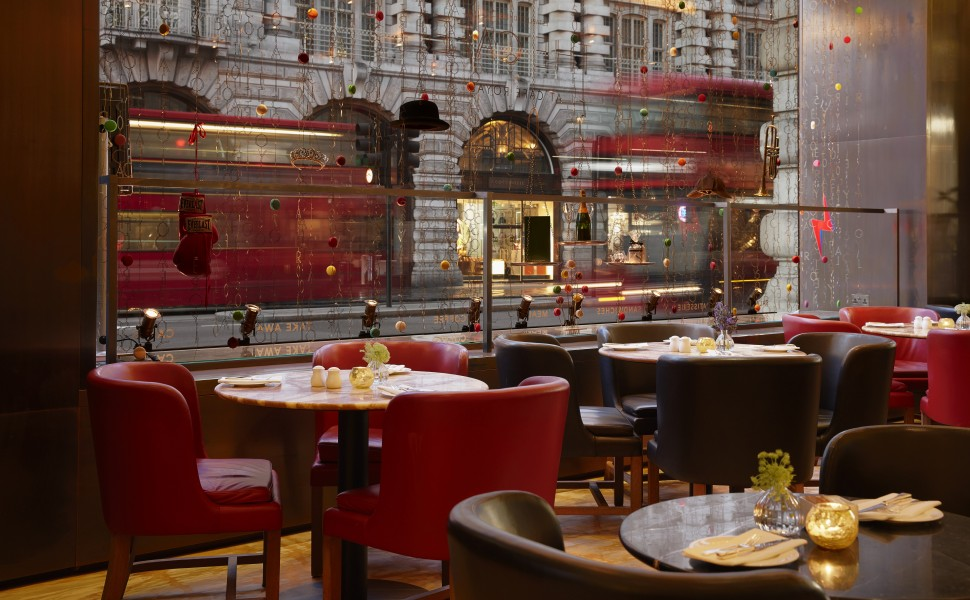
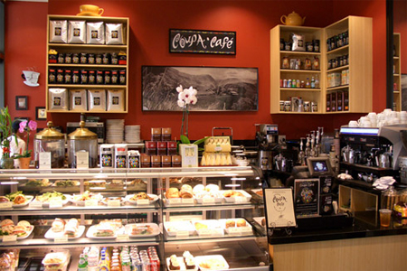

"Always hungry for bellsprouts"
Japanese, Indian, Mediterranean

 Central Kitchen is a popular restaurant that serves a Mediterranean fare. Their food and drink menus were on wooden clipboards. The restaurant was dark and lightly decorated with candles. While waiting for our appetizers and entrees, our server brought us a plate with three different types of bread served with a white bean puree spread. The white bean puree spread had the consistency of hummus and had a strong garlic flavor. Shortly after, our appetizers and entrees came out. I was amazed that everything was ready at the same time. Our server asked us if they should bring everything out at once or serve the appetizers first. Since my party was quite hungry, we asked him to bring everything out at once.
 It was a pretty good place to hang out since not a lot of people stayed inside the cafe. Most people are in and out of the coffee shop to buy coffee. The cookie looks really cute also. Too bad, i have no cookie craving at all. Maybe next time.